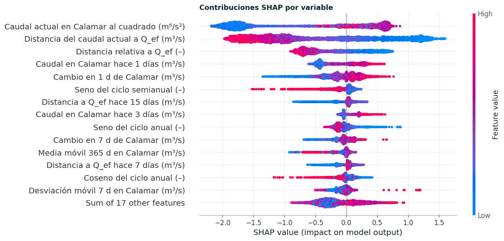
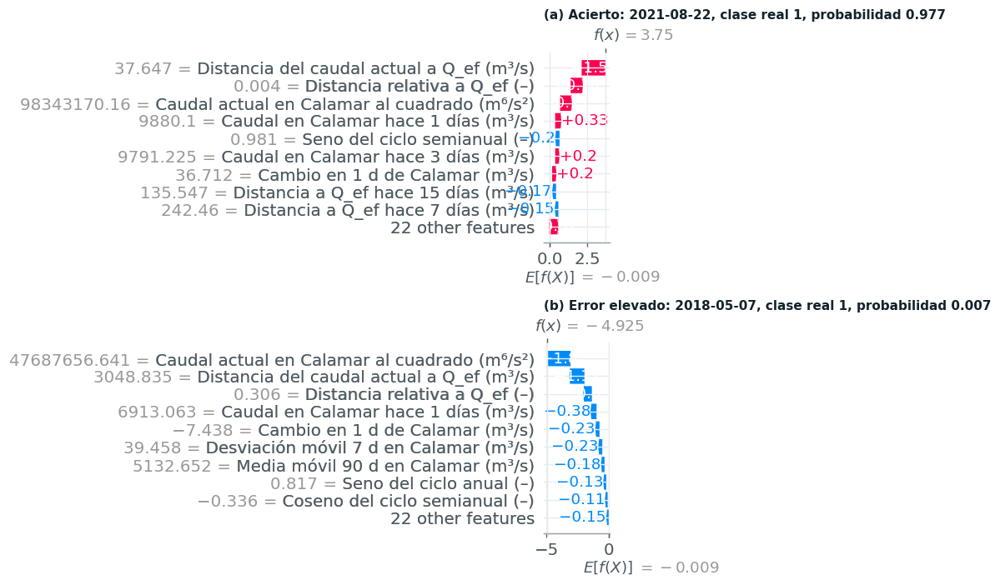

Interpretabilidad global y local#
Este capítulo analiza el modelo de clasificación con SHAP [Lundberg and Lee, 2017] y compara sus explicaciones con las de LIME. El modelo explicado es XGBoost, que ocupa el puesto 2 entre los benchmarks de clasificación y admite el algoritmo TreeSHAP [Lundberg et al., 2020], que calcula los valores de Shapley de forma exacta y en tiempo polinómico recorriendo los caminos de cada árbol. Los valores se expresan en log-odds de la clase positiva, la escala aditiva del modelo. La interpretabilidad del modelo original y su comparación con la de este benchmark se presentan en el capítulo 6.
Interpretabilidad global#

Figura 19 Gráfico resumen de SHAP en la prueba 2010-2026. Cada punto es un día; la posición horizontal es la contribución a la predicción (log-odds) y el color, el valor de la variable (rojo alto, azul bajo).#
Las tres variables con mayor contribución media son «Caudal actual en Calamar al cuadrado (m⁶/s²)», «Distancia del caudal actual a Q_ef (m³/s)» y «Distancia relativa a Q_ef (–)», y las cinco primeras concentran el 67 % de la importancia total. El patrón de colores describe la regla física que el modelo aprendió: una distancia grande a la descarga efectiva (rojo en la segunda fila) empuja la predicción hacia fuera de la banda, mientras que una distancia pequeña la empuja hacia dentro; el caudal actual al cuadrado actúa en el mismo sentido, con contribuciones negativas para los caudales bajos. El cambio diario del caudal y el rezago de un día aportan la tendencia de corto plazo: un río que sube se acerca a la banda desde abajo. Los armónicos estacionales contribuyen con signo coherente con el régimen bimodal. Puerto Salgar, en cambio, aporta apenas el 0,6 % de la importancia: con un horizonte de quince días y un tránsito de veintiuno, su señal anticipada existe pero queda en buena parte contenida en el estado reciente de Calamar, lo que confirma lo observado en la comparación de diseños del capítulo 2.
Interpretabilidad local#

Figura 20 Explicaciones locales de dos días de la prueba. (a) Día correctamente clasificado con alta confianza; (b) día con el mayor error absoluto entre la probabilidad predicha y la clase observada.#
El acierto (2021-08-22, probabilidad 0,977) es un día en que el caudal ya estaba cerca de la descarga efectiva; las contribuciones dominantes son «Distancia del caudal actual a Q_ef (m³/s); Distancia relativa a Q_ef (–); Caudal actual en Calamar al cuadrado (m⁶/s²)», y todas empujan en el mismo sentido. El error elevado (2018-05-07) es más instructivo: el modelo asignó una probabilidad de 0,007 a un día que sí estuvo en la banda. El caudal de ese día era de 6.906 m³/s y quince días después alcanzó 8.497 m³/s, apenas por encima del límite inferior de la banda (8.461 m³/s). Las variables que explican el error («Caudal actual en Calamar al cuadrado (m⁶/s²); Distancia del caudal actual a Q_ef (m³/s); Distancia relativa a Q_ef (–)») describen un río todavía lejos de la banda, y el modelo no tenía cómo anticipar un ascenso de más de 1.500 m³/s en quince días que lo dejaría en el borde. Es un tipo de error característico de un objetivo definido por umbrales, que el capítulo 6 cuantifica por régimen hidrológico: los días que cruzan el límite por un margen pequeño, donde la etiqueta binaria trata igual un caudal de 8.500 m³/s que uno de 10.000 m³/s. Esta observación es la motivación directa del modelo original del capítulo 5, que modela cuán lejos de los límites quedará el caudal y no solo de qué lado.
Comparación con LIME#
| observación | R² del sustituto local de LIME | variables comunes en el top 10 | Spearman |LIME| vs |SHAP| (top 10 LIME) | signos coincidentes | top 3 LIME | |
|---|---|---|---|---|---|---|
| 0 | acierto | 0.452 | 9 | 0.891 | 10 | dist_qef <= 1415.54; calamar_cuad > 81812025.0... |
| 1 | error elevado | 0.144 | 5 | 0.952 | 9 | 2973.46 < dist_qef <= 4669.46; 28249225.00 < c... |
| grupo | alejados del límite | próximos al límite | p (Mann-Whitney) |
|---|---|---|---|
| R² del sustituto | 0.242 | 0.336 | 0.117 |
| variables comunes (top 10) | 7.000 | 7.000 | 0.785 |
| Spearman |LIME| vs |SHAP| | 0.758 | 0.733 | 0.357 |
| signos coincidentes | 1.000 | 0.900 | 0.001 |
LIME [Ribeiro et al., 2016] explica cada predicción ajustando un modelo lineal ponderado a perturbaciones de la observación en un entorno local, mientras que SHAP distribuye la predicción entre las variables según los valores de Shapley, que cumplen eficiencia (la suma de las contribuciones es exactamente la diferencia entre la predicción y el valor esperado), simetría y aditividad. En el día acertado ambos métodos coinciden: comparten 9 de las diez variables más importantes y la correlación de rangos entre sus magnitudes es 0,89, aunque el sustituto lineal de LIME solo explica un R² = 0,45 del modelo en el entorno. En el día con error, la coincidencia cae a 5 variables comunes y el R² del sustituto local a 0,14.
Dos observaciones no bastan para establecer un patrón, por lo que la comparación se extendió a una muestra de cien días de prueba próximos a un límite de la banda y cien alejados de él (tabla anterior). La muestra matiza lo observado en los dos días. La correlación de rangos entre las magnitudes de LIME y SHAP es similar en ambos grupos (0,73 en los días próximos y 0,76 en los alejados, medianas; p = 0,36, Mann-Whitney), el R² del sustituto local tampoco difiere (p = 0,12) y ambos métodos coinciden en una mediana de 7 de las diez variables más relevantes. La caída del R² en el día con error no es, por tanto, una propiedad general de los días próximos al límite. La diferencia sistemática está en el signo: la proporción de variables a las que ambos métodos asignan el mismo sentido de contribución es de 1,00 en los días alejados y baja a 0,90 en los próximos (p = 0,001). Cerca de un límite, LIME invierte el sentido de alguna de las variables secundarias, aunque identifica bien cuáles son relevantes y en qué orden.
La inversión de signos tiene dos causas. Cerca de un límite, la probabilidad predicha cambia bruscamente con el caudal, y una aproximación lineal ajustada a perturbaciones del entorno promedia contribuciones de ambos lados del límite, que tienen signo opuesto, mientras que TreeSHAP calcula las contribuciones exactas del modelo de árboles sin aproximarlo. Además, LIME discretiza las variables continuas en cuartiles y perturba cada una de forma independiente, lo que genera combinaciones poco plausibles cuando las variables están tan correlacionadas como los rezagos de un caudal con autocorrelación de 0,999. Cabe esperar, por tanto, que ambas técnicas diverjan cuando el modelo es fuertemente no lineal en el entorno de la observación, cuando las variables están correlacionadas y cuando la observación está cerca de una frontera de decisión. En esos casos la explicación de SHAP es la más fiel al modelo, y la de LIME debe leerse en cuanto a las variables que identifica y su importancia relativa, pero no en cuanto al sentido de las contribuciones secundarias.